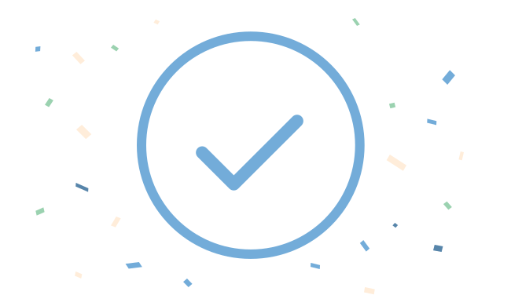

식사 타이머
타이머와 함께 식사를 시작해보세요.
1단계 · 단백질
단백질부터 시작해요
처음 5분은 계란말이를 천천히 드세요.
남은 시간05:00
식사 완료
식사를 완료하였습니다!
오늘도 건강한 식사 습관을 실천했어요.

오늘 기록 요약
- ◷
- 총 식사 시간00:00
- ☰
- 단계 완료3 / 3
- ☆
- 식사 순서 준수100%
자동 전환 안내 시간이 지나면 다음 단계로 자동 전환됩니다. 알림음 없이 화면만 바뀌니 편하게 식사해주세요.